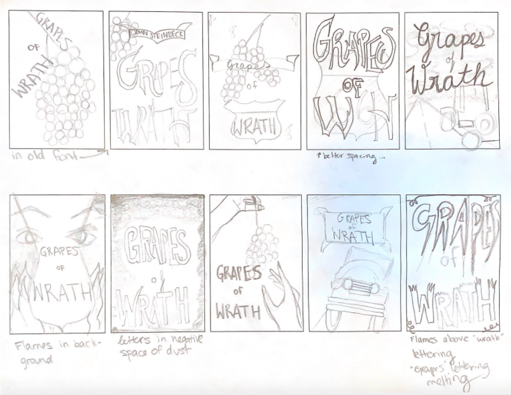
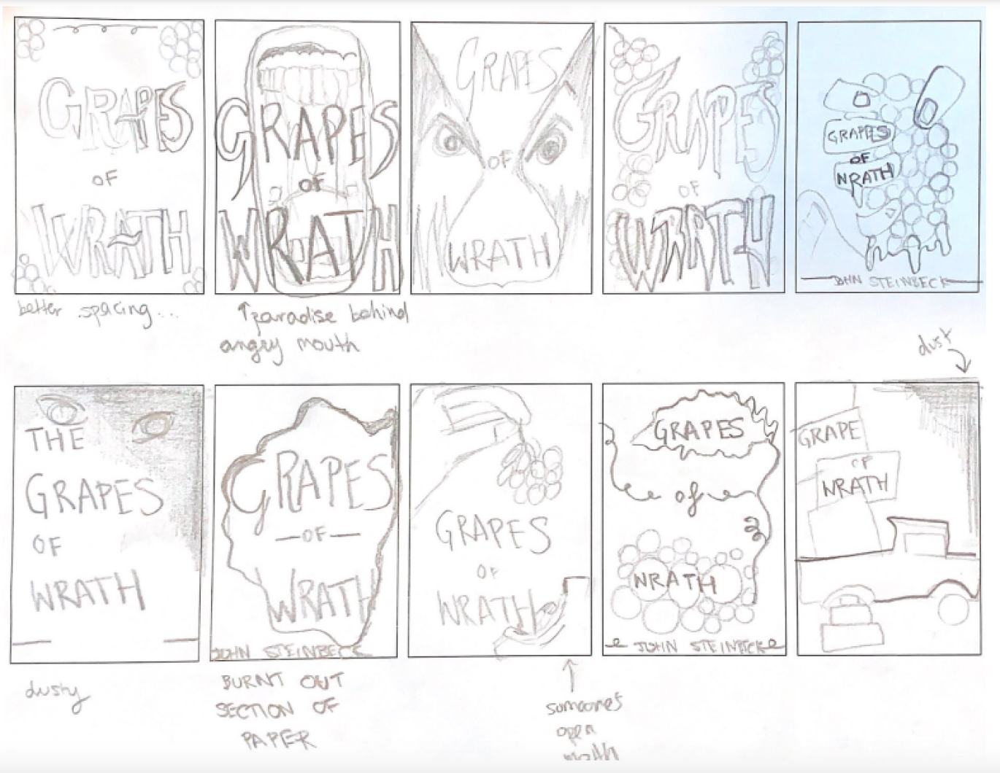

Book Cover
I redesigned a book cover for Grapes of Wrath. I explored different type, texture, and composition. Below I will take you through my process.
I began my process by thinking of tones, moods, and images that the book evokes. I found inspiraiton from old pictures of wagens and images from the Dust Bowl era.
I like how the older images fade and show age with stains and darker patches.
I also explored older fonts and adding texture to them with Noise.
Sketch Ideas
Round One
Round Two
Concept Process
To make my vision a reality, I decided to see if I could control a burn on paper. To begin, I aged the paper by dipping it in coffee on a baking sheet. Once it was coated, I let it dry before the next steps. I then cut out the shape that I wanted to burn, and went outside, and lit the edges with a lighter. After getting all of the edges burnt, it was ready to move into the digital world.
Digital Concepts
Digital Variations
After getting feedback from my class, I designed the third level of type hierarchy. I played around with texture and my levels of hierarchy with my digital variations. I liked exploring textures like the burlap for the text. I also played around with curving the third information text “Winner of the Pulitzer Prize.” I like the curved text I just wasn’t set on the font. I decided to pursue the burlap texture.